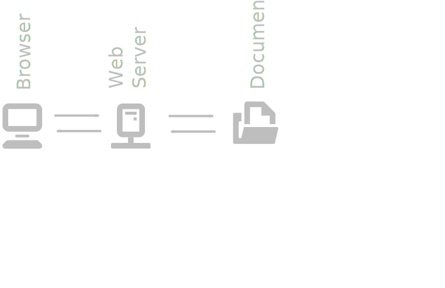
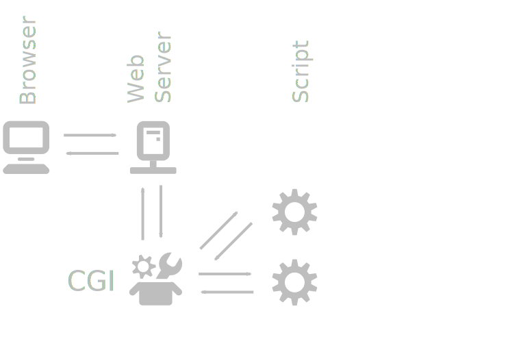
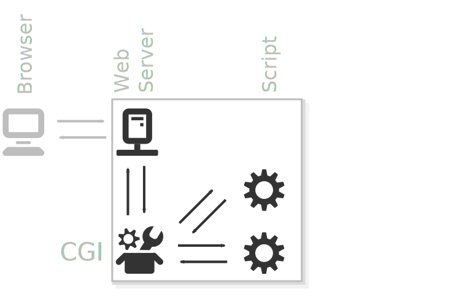
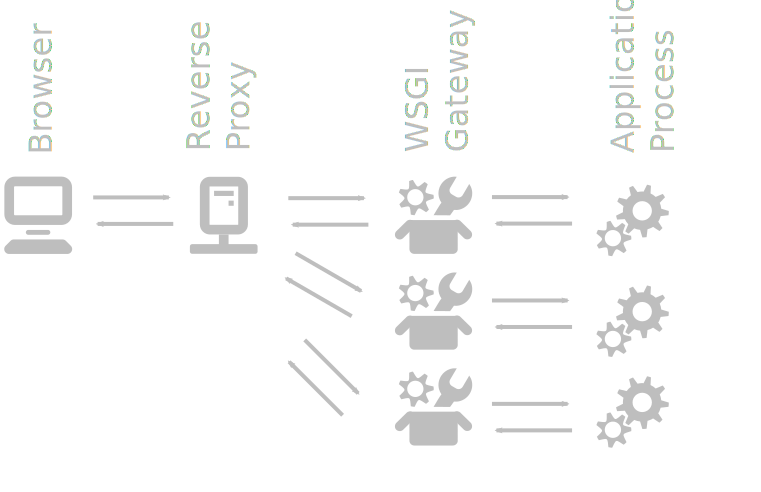
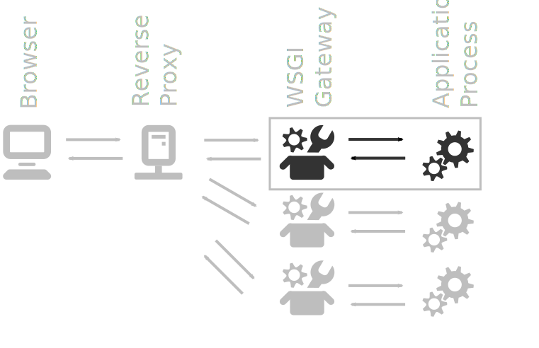
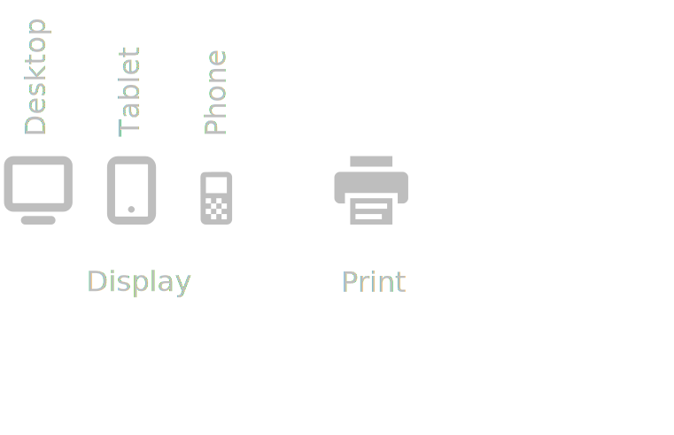

Intranet Strategie
Simon Wunderlin
Departement für Anästhesie
Goals
- Platform independent
- Flexible and Extendable
- Low Maintenenace
- Media independend
Static Web Pages

Static Web Pages
Short comings
CGI Web Pages

CGI Web Pages

CGI Web Pages
Short comings
- Limited Interaction between programs and Webserver
- Limited performance
- Hard to use more than one technology / provider
WSGI Web Pages

WSGI Web Pages

Media independent
